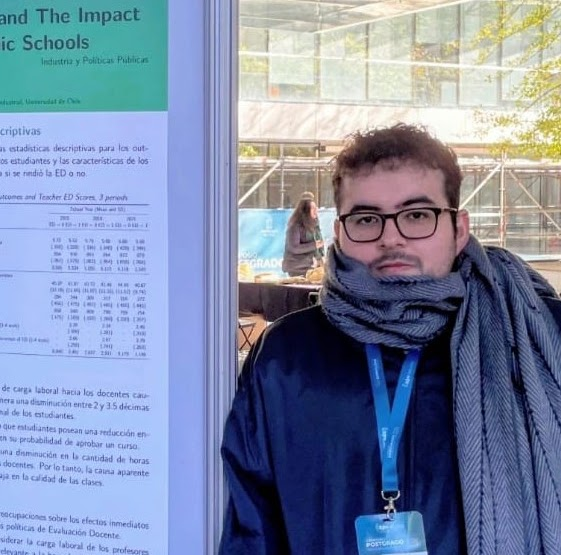

I am a microeconomist. My research focuses on how policies, interventions, and markets shape individual and institutional outcomes within education systems, and promote equitable opportunities for human capital accumulation.
Evaluating the impact of a large-scale regulatory policy on student performance and non-cognitive skills.
How individual, school, and system-level factors influence teacher retention and mobility.
How mechanism design can help reduce teacher turnover.
Studying dynamics of teacher entry, mobility, and exit across the Chilean public system.
Examining how the arrival of immigrant students affects teachers and their behavior.
Estimating the effects of pseudo-mandatory kindergarten on student achievement and mobility to top schools in Chile